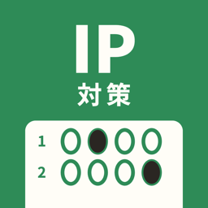

プライバシーポリシー
ITパスポート 過去問(以下「本アプリ」)は、Yosuke Koto(以下「運営者」)が提供する、ITパスポート試験の学習アプリです。 本アプリでの情報の扱いを、次のとおり定めます。
1. 本アプリが扱う情報
本アプリは、次の情報を、お使いの端末の中にだけ保存します。
- 解いた問題と、選んだ答え、正解かどうか、解いた日時、解くのにかかった時間、出題の形式(回ごと・分野別など)
- ブックマークした問題
- 購入の状態
これらの情報を、運営者のサーバーやほかの会社に送ることはありません(運営者は、本アプリのためのサーバーを持っていません)。 運営者が、これらの情報を見ることはできません。本アプリには、アカウントの登録やログインはありません。
2. 購入
全ての問題を解けるようにする購入は、App Store(Apple)の仕組みで行います。 購入の手続きと、購入したかどうかの確認のために、本アプリは App Store と通信します。 お支払いの情報(クレジットカードなど)は Apple が扱い、運営者は受け取りません。 購入の情報の扱いは、Apple のプライバシーポリシーをご覧ください。
3. 分析と広告
本アプリは、利用状況の分析、広告、行動の追跡(トラッキング)を行いません。そのための部品も入っていません。
4. 端末のバックアップ
端末のバックアップの機能(iCloud のバックアップなど)を使っている場合、本アプリの情報が、そのバックアップに含まれることがあります。 これは端末の機能によるもので、運営者はその内容を見られません。
5. 情報の削除
本アプリを端末から削除すると、本アプリの全ての情報が消えます。購入は Apple アカウントに記録されているので、入れ直した後に「購入を復元する」で戻せます。
6. このポリシーの変更
このポリシーを変えるときは、このページで知らせます。本アプリの情報の扱いが大きく変わるときは、本アプリの中でも知らせます。
7. お問い合わせ
sky.k.support+learnip@gmail.com
制定日: 2026年11月25日